講師｜鍾孟修 職能治療師
點任何一格，直接跳過去。學不完沒關係，簡報網址掃起來，回家慢慢看。
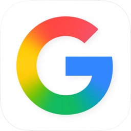
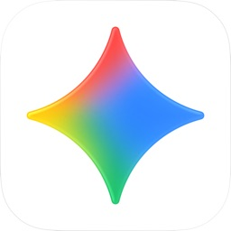
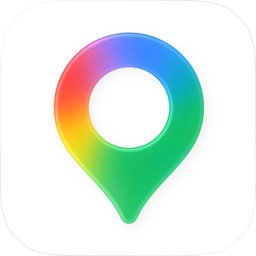
就像 Google Keep：看到好影片、好食譜、回診時間，隨手丟進去，以後要找都在這裡。
智慧鏡頭不只說名字，還會整理特徵：全身白、嘴巴黑、腳趾是黃色，常在稻田、溪邊。
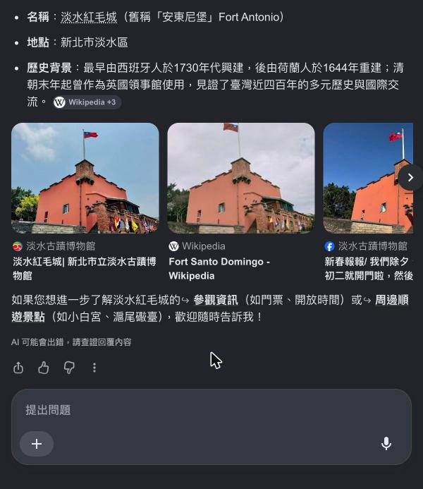
名字、地點都對，還附上淡水古蹟博物館的網頁。
智慧鏡頭不是用來查陌生人是誰的，拍到人通常不會告訴你他是誰。
右邊的日文菜單，按一下看翻譯 👉
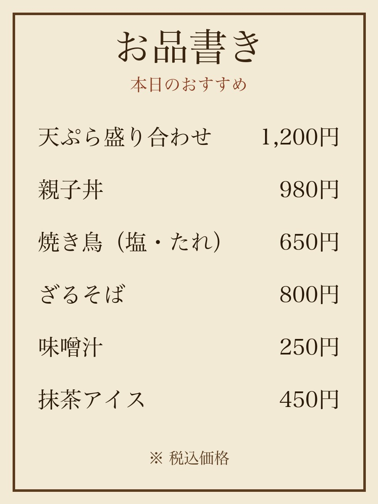
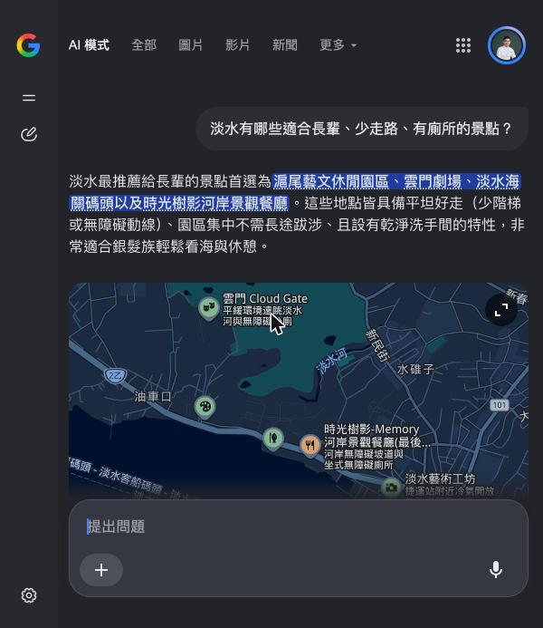
「我 70 歲有高血壓，淡水有哪些少油少鹽的午餐？列 3 家，寫地址」
「從淡水捷運站到馬偕醫院，不想走太多路，怎麼坐車最方便？」
（拍一張葉子發黃的照片）「我的番茄葉子為什麼變黃？要怎麼救？」
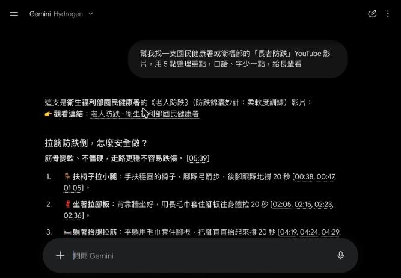
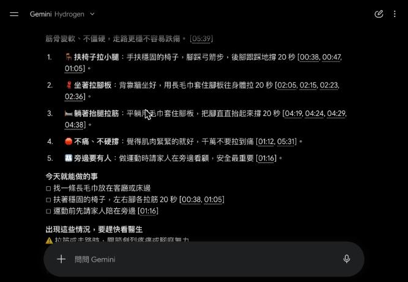
台灣、中文都能用，但只有部分影片有這個按鈕。
ChatGPT 打不開 YouTube 影片，只看得到標題，可能會照標題亂編內容。
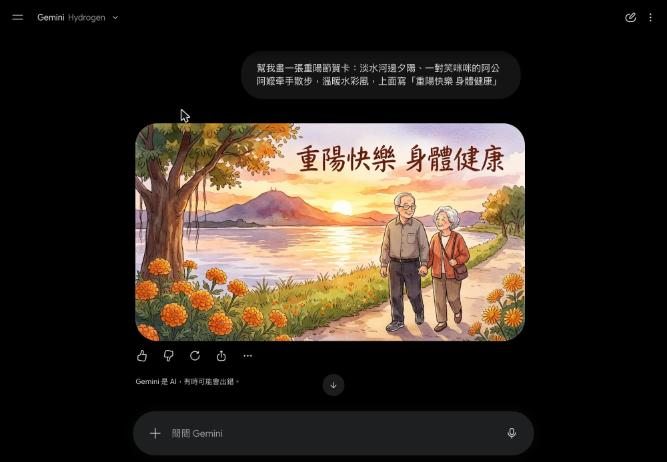
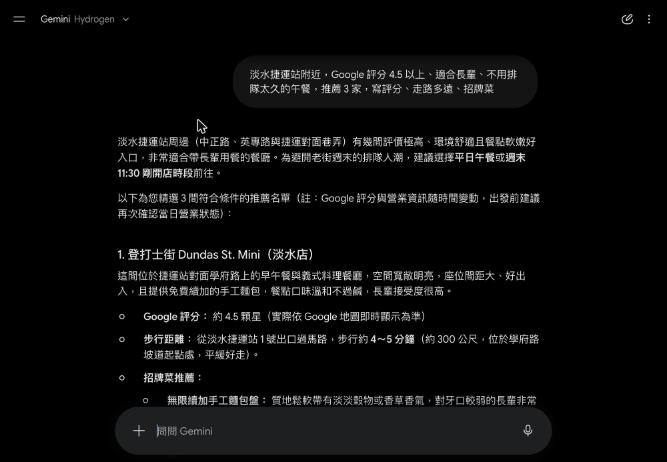
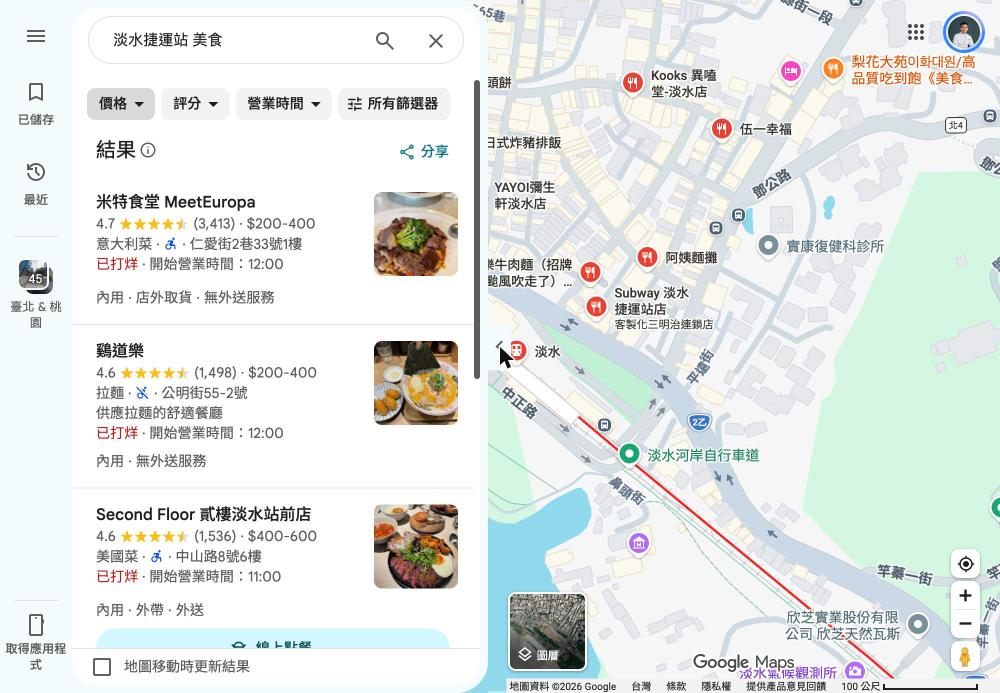
點對話框右邊的 Live，直接用國語聊。也能打開鏡頭問：「這是什麼？」
「字太小，幫我唸這個藥一天吃幾次」
「幫我寫 3 句給孫子的生日祝福，溫暖、20 字內」，寫好複製到 LINE。
「幫我排淡水半日遊，少走路、有廁所、有午餐」
拍葉子：「這是缺水還是生病？要怎麼辦？」
拍通知單：「這張要我做什麼？什麼時候截止？」
用手機看這份簡報，點自己手機的按鈕就會打開商店 👉 你的手機是 iPhone，按黑色按鈕👉 你的手機是 Android，按黑色按鈕
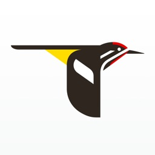
不用去商店下載，不佔空間。今天的「動腦遊戲館」、「長者須知」都可以放到桌面。
完成的人舉手，幫旁邊的同學一起做！
懷舊：猜歌・猜懷舊物品・猜景點・猜鳥・猜昆蟲・猜蔬果・俗語接龍｜認知：翻牌・顏色字・數字順序・找不一樣・算錢・買菜記憶
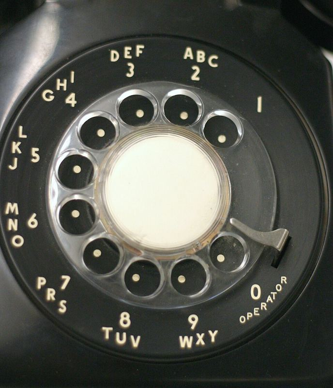
社會福利・健康資訊・生活大小事・重要電話｜中央＋新北、台北、桃園、新竹、苗栗，每一則附官方出處
新北、台北 115 年 7 月起每月 600 點（原 480 點）。
流感、新冠 10/1 起；65 歲以上肺炎鏈球菌疫苗公費 1 劑。到衛生所或合約診所。
115/5/31 起新制：70 歲體檢＋2 小時講習，75 歲加認知測驗，之後每 3 年換照。
65 歲以上每年 1 次成人健檢；可同時做「長者量六力」。帶健保卡到衛生所或診所。
照顧、交通接送、輔具、喘息四包錢。家裡長輩需要幫忙，先打 1966。
說你帳戶有問題、要你匯款、要驗證碼的，都先掛斷，打 165。
規定與金額可能調整，詳細條件與官方連結都在「長者應該要知道的事」裡，查證日 2026-11-16。
有問題歡迎到粉絲專頁留言，或掃簡報 QR Code 回家複習。
照片：Wikimedia Commons（授權見遊戲館「圖片來源」頁；杜鵑花 ForestWander, CC BY-SA 3.0 US）｜插畫：ChatGPT 生成｜實際畫面：講師 2026-11-16 實測｜App 圖示：App Store